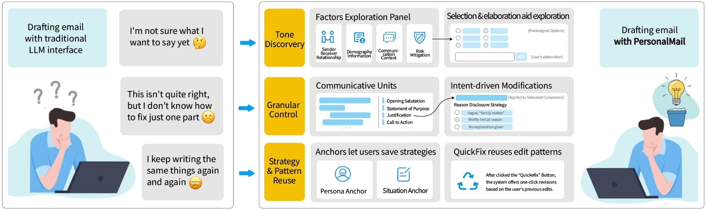
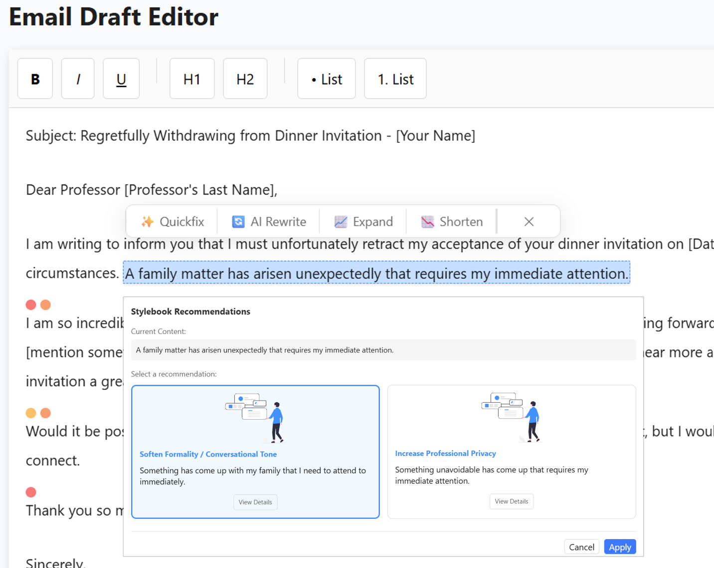
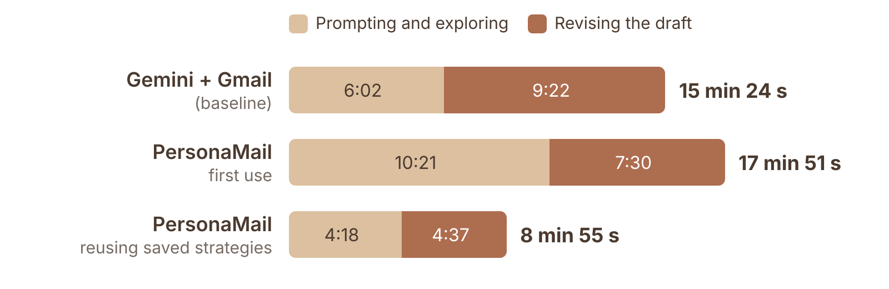

ACM IUI 2026
PersonaMail: Learning and Adapting Personal Communication Preferences for Context-Aware Email Writing
1New York University, Tandon School of Engineering 2City University of Hong Kong
PersonaMail addresses three challenges identified in formative studies through structured communication factor exploration, granular editing controls, and adaptive reuse of successful strategies. Compared against standard LLM interfaces, it showed improved efficiency in both immediate and repeated use, alongside higher user satisfaction.
Why it matters
LLM-assisted writing has seen rapid adoption in interpersonal communication, yet current systems often fail to capture the subtle tones essential for effectiveness. Email writing exemplifies this challenge: effective messages require careful alignment with intent, relationship, and context beyond mere fluency.

assets/projects/personamail/fig1-overview.pngPaper Fig. 1: PersonaMail overview, contrasting a traditional LLM interface with the structured solution.
What the paper did
- Formative studies. Three key challenges: articulating nuanced communicative intent, making modifications at multiple levels of granularity, and reusing effective tone strategies across messages.
- PersonaMail. A system that addresses these gaps through structured communication factor exploration, granular editing controls, and adaptive reuse of successful strategies.
- Evaluation. A user study with 16 participants comparing PersonaMail against a standard LLM interface (Gemini with Gmail).

assets/projects/personamail/editor.pngScreenshot of the PersonaMail editor with Quickfix suggestions.
What the paper found

assets/projects/personamail/time.svgSimple stacked bars of mean task time.
Design implications
- Factor-based scaffolding for intent. Translate tacit social knowledge into explicit, adjustable factors (e.g., relationship closeness, emotional stakes) so users can externalize nuanced goals without articulating every unspoken detail.
- Communicative-unit and intent-driven control. Segment emails into functional sections (e.g., Opening_Salutation, Justification) and expose the AI's underlying reasoning as editable intents, so users can manipulate the social function of message segments without direct text editing.
- Adaptive reuse for continuity. Capture successful strategies as reusable “anchors” that preserve not just content but the underlying social logic.
- Privacy and ethical considerations. Personalized tone learning raises privacy concerns, and adaptive systems may reinforce communication patterns that limit users' expressive range.
Cite
@inproceedings{yao2026personamail,
title = {PersonaMail: Learning and Adapting Personal Communication Preferences for Context-Aware Email Writing},
author = {Yao, Rui and Ren, Qiuyuan and Tan, Felicia Fang-Yi and Chen, Yang and Zhang, Xiaoyu and Zhao, Shengdong},
booktitle = {Proceedings of the 31st International Conference on Intelligent User Interfaces},
series = {IUI '26},
year = {2026},
publisher = {ACM},
doi = {10.1145/3742413.3789123}
}